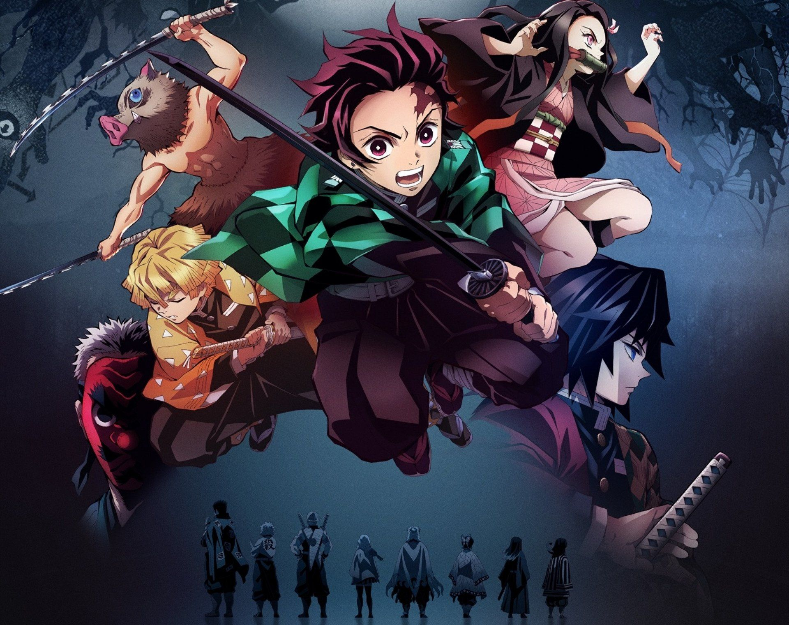

3 Animes you shouldn't watch during quarantine!
"The 3 Animes that are being recommended aren't necesarrily the best ones out there. Some of them are extremely popular and they're enjoyable to watch and just for pure entertaintment. Note that there will be no major spoilers."
#1 Kimetsu no yaiba/Demon Slayer + Movie (Mugen Train)

Demon Slayer first aired on April 6, 2019 and ended on September 28, 2019.
The story follows the life of Kamado Tanjiro. One day, he found all his family members dead and the sole survivor,
his sister, had been turned into a demon. Consumed by rage and hatred, Tanjirou swore to avenge his family and to protect his only sibling.
In the first season, The story ended with the main character boarding a train.
An announcement of a movie release was made at the end of the episode.
In 2021, The movie "Kimetsu no yaiba movie: Mugen Reshha-Hen/Infinity Train" was released.
This movie directly continues from where we left off and breaks the records as the highest grossing anime film.
The excitement isn't over since season 2 is coming out this October!
#2 Jujutsu Kaisen/Sorcery Fight
Jujutsu Kaisen first aired on September 20, 2020 and ended on March 26, 2021.
This story follows the life of Itadori Yuuji.
One day, from a chain of events, Yuuji found himself suddenly thrusting into the world of Curses, dreadful beings formed from human malice and negativity.
He happened to swallow a finger that belonged to the "King of Curses" Ryoumen Sukuna.
Introduced to the Tokyo Metropolitan Jujutsu Technical High School, he began to walk down a path from which he could not turn down the path of a Jujutsu sorcerer.
We are expecting a movie for Jujutsu Kaisen in 2022 next year.
#3 Vivy: Fluorite Eye's Song
.png)
Vivy: Fluorite Eye's Song first aired on April 3, 2021 and ended on June 19, 2021.
The story is about the first ever autonomous humanoid A.I, Vivy.
Vivy acted as an A.I cast for the establishment.
To fulfill her mission, she needed to make everyone happy by singing.
One day, an A.I claimed that it had travelled from 100 years into the future.
So, a new mission and journey began for Vivy and her new partner to prevent a war between A.I and Humanity.